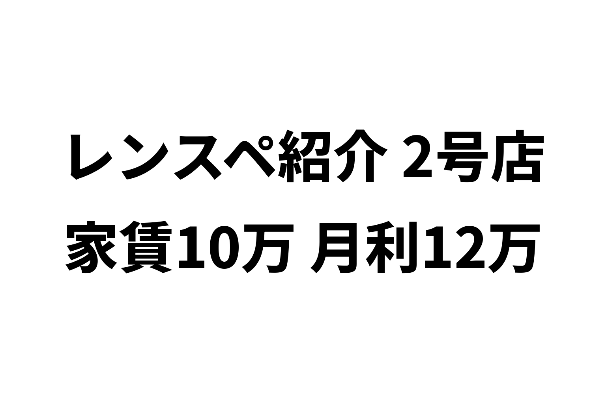
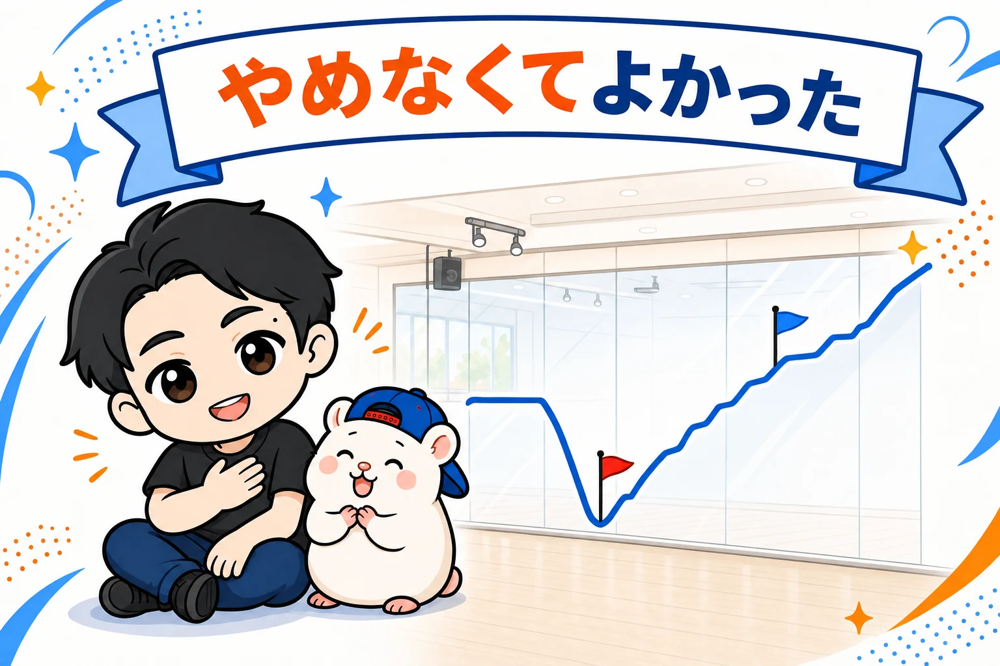

一度、「やめます」と伝えた店です。
ぼくのレンタルスペースの中の、ダンススタジオ「2号店」。1号店と同じ建物の、上の階にあります。
2店目を出したら、お客さんが2つに分かれました。
| 月の平均 | 1号店だけ | 2店にしたら |
|---|---|---|
| 家賃などの費用 | 12.4万円 | 25.0万円(約2倍) |
| 売上 | 33.5万円 | 39.5万円(+6万円だけ) |
| 利益 | 21.1万円 | 14.5万円 |
店をふやしたのに、利益は減ったんです。
いちばん落ちた月は、2店あわせて3.2万円。家賃を2つ払って、これです。
もうダメだと思って、管理会社さんに解約を伝えました。
ところが、募集が出たとたんに申し込みが入ります。
いやな予感がして、聞いてみると――
相手は、ダンススタジオでした。
ぼくは頭を下げて、もう一度契約させてもらいました。
あれから4年。2店あわせた数字は、いまこうです。
| 月の平均 | 2店にしたころ | いま(2店) |
|---|---|---|
| 家賃などの費用 | 25.0万円 | 25.8万円(ほぼそのまま) |
| 売上 | 39.5万円 | 52.5万円 |
| 利益 | 14.5万円 | 26.8万円 |
1店だけのころ(21.1万円)も、上回りました。
とはいえ、同じ建物に2店目を出せば伸びる、という話ではありません。カニバリ(自分の店どうしでお客さんを取り合うこと)で1年近く苦しんだ数字も、そのまま出します。
店名と場所はふせますが、家賃、売上、利益、リピート率まで全部出します。
どんな店か
| 項目 | 中身 |
|---|---|
| オープン | 2021年10月(いま5年目) |
| 場所 | 住宅街の駅。駅から徒歩5分。1号店と同じ建物 |
| 広さ | 40㎡ |
| 営業 | 24時間 |
| 料金 | 1号店と同じ(1時間1,000〜2,000円くらい。早朝・深夜は安くしています) |
1号店をオープンしてから、7ヶ月後に出しました。
家賃と、契約でかかったお金
家賃は、月10.3万円です。
ダンスのレンタルスタジオ11店舗の家賃の平均は、11.2万円。
1号店(9.9万円)と、ほぼ同じです。
初期費用と回収
2号店の初期費用は、細かい記録が残っていません。
なので、金額は出しません。
分かっているのは、元が取れたのが16ヶ月目(2023年1月)だったことです。
1号店は7ヶ月だったので、2倍以上かかりました。
理由は、このあと出てくる「カニバリ」です。
設備と、この店の特徴
設備は、1号店とほぼ同じです。
- 壁一面の鏡
- 音楽プレーヤー(Bluetoothでつなげる)
- 照明
- 着替えのスペース
- Wi-Fi
使われ方を、1号店とくらべました。
| 用途 | 2号店 | 1号店 |
|---|---|---|
| ダンス | 72.4% | 69.9% |
| ヨガ・ピラティス | 6.0% | 2.9% |
| トレーニング | 4.8% | 5.4% |
ダンスが約7割なのは同じです。
ちがいが出たのは、ヨガ・ピラティス。1号店の約2倍です。
同じ建物でも、少しずつ、ちがうお客さんがついています。
集客は、定期利用が土台
毎週同じ曜日・同じ時間に使ってくれる定期利用が、6本入っています。
| 定期利用(2026年6月) | 2号店 | 1号店 |
|---|---|---|
| 本数 | 6本 | 10本 |
| 1ヶ月の時間 | 約48時間 | 約72時間 |
| 売上 | 月6.4万円 | 月11.0万円 |
1号店とくらべると、まだ少なめです。
リピート率と、埋まっている時間
公式サイトから予約した人のデータを数えました(2025年4月〜2026年8月)。
| 項目 | 2号店 | 1号店 |
|---|---|---|
| 利用した人 | 319人 | 319人 |
| 2回以上来た人 | 49.2% | 43.9% |
| 5回以上来た人 | 21.0% | 22.6% |
| 利用日のうち、リピーターが占める割合 | 88.6% | 88.6% |
2回以上来た人の割合は、いま運営している5店舗の中でいちばん高い数字です。
1回使った人の、約半分がもう一度来てくれています。
次に、埋まっている時間です。
24時間営業なので、1週間に何時間埋まっているかで見ます。
2026年の4月から8月は、1週間に53〜62時間埋まっていました。
この店が黒字になるのに必要なのは、1週間に27時間くらいです。
必要な時間の2倍くらいが、埋まっています。
数字をぜんぶ出します
利益は、売上から家賃・Wi-Fi・水道光熱費・広告費を引いた額です。
清掃費や消耗品、ぼくの人件費と初期費用は入っていません。
| 期間 | 売上 | 利益 | 月の利益(平均) |
|---|---|---|---|
| 1年目(2021年10月〜2022年9月) | 217.2万円 | 64.6万円 | 5.4万円 |
| 直近1年(2025年6月〜2026年5月) | 301.0万円 | 143.9万円 | 12.0万円 |
| 累計(56ヶ月) | 1,270.3万円 | 542.2万円 | 9.7万円 |
いちばんいい月は、2025年11月の16.9万円。
いちばん低い月は、2022年6月の1.2万円です。
56ヶ月、赤字の月はありません。
ただ、1年目の月平均は5.4万円。
直近1年の12.0万円の、半分以下でした。
カニバリで2店あわせて月3.2万円。一度は解約を伝えました

2店にしたら、利益が減った
2号店を出す前と、出したあとをくらべます。
| 期間 | 店の数 | 家賃などの費用 | 売上 | 利益 |
|---|---|---|---|---|
| 2021年7〜9月 | 1号店だけ | 12.4万円 | 33.5万円 | 21.1万円 |
| 2021年10月〜2022年6月 | 1号店+2号店 | 25.0万円 | 39.5万円 | 14.5万円 |
| 直近1年(2025年6月〜2026年5月) | 1号店+2号店 | 25.8万円 | 52.5万円 | 26.8万円 |
(どれも月の平均)
店が2つになって、家賃などの費用は約2倍になりました。
でも売上は、月6万円しかふえていません。
2店あわせた利益は、1店だけのときより月6.6万円少なくなりました。
同じ建物に、同じダンスのレンタルスタジオが2つ。
お客さんは、新しくふえたのではなく、2つに分かれただけでした。
これが、カニバリです。
※くらべた「1号店だけ」の3ヶ月は、1号店がいちばん好調だった時期です。少しきびしめのくらべ方になっています。
どん底は、2022年6月
いちばん落ちたのは、2022年6月でした。
| 2022年6月 | 利益 |
|---|---|
| 1号店 | 2.0万円 |
| 2号店 | 1.2万円 |
| 2店あわせて | 3.2万円 |
1号店も2号店も、オープンしてからいちばん低い月です。
この数字を見た翌月の1日に、解約を伝えました。
解約を伝えた
2022年7月1日。
管理会社さんに電話をして、2号店の部屋を解約したいと伝えました。
その日のうちに解約通知書をもらって、記入して、メールで送りました。
管理会社さんに解約を相談したメール(実際の画面・2022年7月1日)
管理会社さんからは、残るもう1つの店の商売繁盛を祈ってくれる返事が来ました。
ここで、いったん話は終わったはずでした。
募集に出たとたん、申し込みが入った
部屋は、すぐに次の人の募集に出されました。
そして、出たとたんに申し込みが入りました。
気になって、管理会社さんに相手のことを聞いてみました。
申し込んできたのは、ダンススタジオでした。
たぶん、この建物にダンスのレンタルスタジオがあるのを見ていた人か、同じ商売をしている人です。
「ダンスで使える部屋が空いた」と、チャンスだと思ったのだと思います。
それは、まずい
もし、その人が入っていたら、どうなっていたか。
同じ建物に、ぼくの1号店と、ほかの人のダンススタジオ。
お客さんの取り合いは、なくなりません。
相手が自分から、ライバルに変わるだけです。
しかも、ライバルが値段を下げてきたら、ぼくには止められません。
自分の2店で分け合うほうが、まだましでした。
頭を下げて、再契約
管理会社さんに、何度も電話で相談しました。
解約は撤回できないので、もう一度、新しく契約させてもらう形です。
8月のはじめに、再契約の書類が届きました。
「3Fの書類をお送りしました」=再契約の書類(実際の画面・2022年8月2日)
新しい契約は、2022年9月23日からはじまりました。
お店は、一度も閉めずにすみました。
ただ、管理会社さんには、本当に迷惑をかけました。
解約の書類をつくって、募集の図面まで用意してもらったのに、ぼくの都合でひっくり返したんです。
それでも話を聞いてくれたことに、いまも感謝しています。
そのあと、どうなったか
再契約したあと、2店あわせた利益はこう変わりました。
| 期間 | 2店あわせた月の利益(平均) |
|---|---|
| 2021年10月〜2022年6月(どん底まで) | 14.5万円 |
| 2022年8月〜2023年7月(再契約から1年) | 19.8万円 |
| 2023年(1年間) | 22.7万円 |
| 直近1年(2025年6月〜2026年5月) | 26.8万円 |
いまは、1号店だけだったころ(月21.1万円)を、はっきり上回っています。
2号店は、2024年にも契約を更新しました。
あのとき解約していたら、この月12万円はありませんでした。
そして、同じ建物にライバルがいたかもしれません。
うまくいった理由の仮説
ぼくが考えている理由は、3つです。
1. ライバルを入れなかった
同じ建物のダンススタジオは、ぼくの2店だけです。
カニバリはあっても、お客さんはどちらかのぼくの店に来ます。
2. 時間をかけて、近所に知られた
利用日の9割近くがリピーター。2回以上来た人は約半分。
住宅街の店は、一度知ってもらえると、何度も来てもらえます。
1年目に5.4万円だった利益が、少しずつのびたのは、ここだと思っています。
3. 1号店と、少しずつお客さんがちがう
2号店は、ヨガ・ピラティスが1号店の約2倍です。
定期利用の曜日も、1号店とずれています。
2店で、ちがう時間・ちがう人を受け止められるようになりました。
うまくいっていないこと
1. いまも、1号店とお客さんを分け合っている
2026年の夏、1号店の新しい予約が、5店舗の中で1店だけ減った週がありました。
2号店にお客さんが流れたのかもしれません。
カニバリは、なくなったわけではありません。
2. 深夜が、ほぼゼロ
24時間営業ですが、夜中の0時から朝6時は、ほとんど埋まっていません(夏に数えたときは1.1%)。
1号店(約1割)より、さらに空いています。
3. 定期利用が、1号店より少ない
定期利用は6本で、1号店の10本より少なめです。
月・木・金と日曜は、定期利用がまだ入っていません。
ここから見えたこと
2号店は、数字だけ見れば「出さなければよかった店」でした。
2店にしたら、利益が減ったんですから。
でも、やめようとしてはじめて分かったことがあります。
ぼくが空けた部屋は、ほかの誰かが埋める。
ダンスで使える部屋は、ダンスのレンタルスタジオをやりたい人にとって、のどから手が出るほどほしい部屋です。
1号店のとなりの部屋を、手放してはいけませんでした。
これから始める人へ
3つだけ伝えたいです。
1. 同じ建物に2店目を出すなら、2店あわせた利益で見る
最初は、お客さんが分かれます。
1店だけのときより、利益が下がる時期がある前提で考えてください。
2. 解約する前に、その部屋に「次に誰が入るか」を考える
ダンスで使える部屋は、多くありません。
あなたがやめた部屋に、ライバルが入るかもしれません。
3. やめる判断は、もう少し長く数字を見てから
ぼくは、9ヶ月の数字で解約を決めました。
でも、そこから4年で、2店あわせた利益は2倍近くになりました。
住宅街の店は、知ってもらうまでに時間がかかります。
まとめ
家賃10.3万円。元が取れたのは16ヶ月目。
2店にしたらカニバリで、どん底の月は2店あわせて3.2万円。
一度は解約を伝えて、ダンススタジオの申し込みが入って、頭を下げて再契約しました。
いまは2号店だけで月12.0万円、2店あわせて月約27万円です。
あなたの店のとなりの部屋が空いたら、借りますか? それとも、誰かに借りられてもいいですか?
1号店と2号店の数字を、駅の選び方と物件の判定の型にして、1冊にまとめました。
📘 『【きくりん式】レンタルスペースは「ダンススタジオ」で稼ぐ！完全ロードマップ』
ぼくの11店舗の実録と、毎日使っている物件探しのツールつきです。
第0部はまるごと無料で読めます。

販売価格は3部売れるごとに3,000円ずつ値上がりします（上限あり）。内容・最新価格は販売ページをご確認ください。
▼もう1つの副業、AI社員だけのeBay輸出店の実録🐹

▼ブログ(レンスペ×eBay、全記事まとめ)